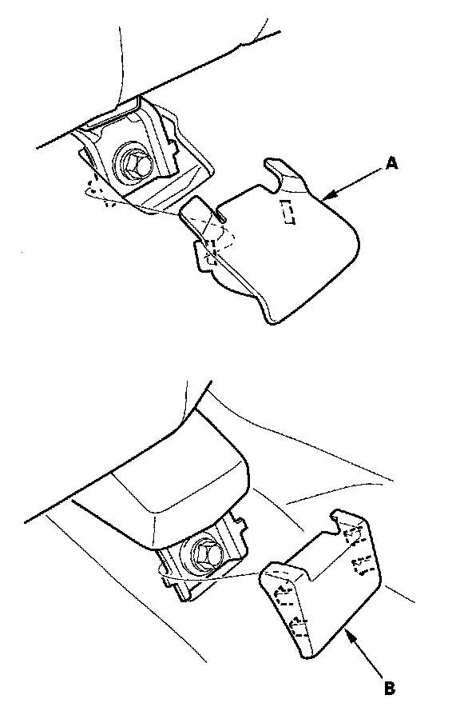
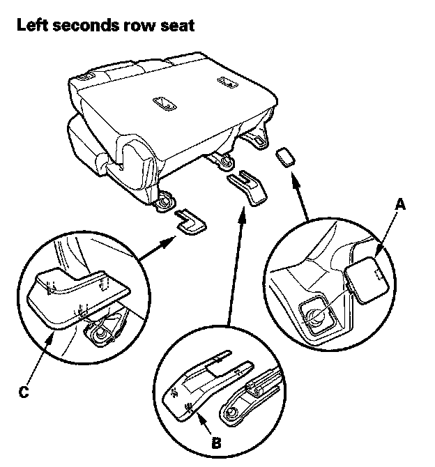
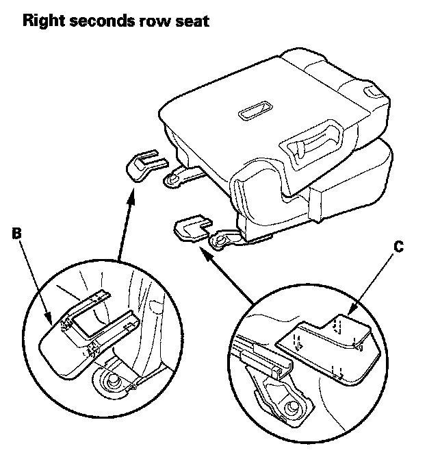
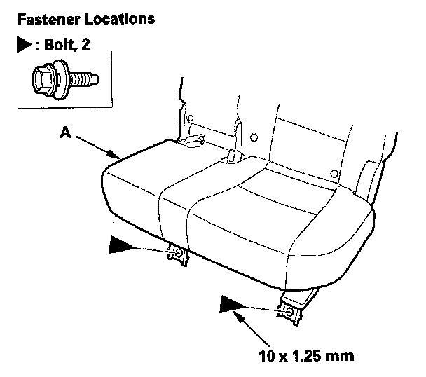
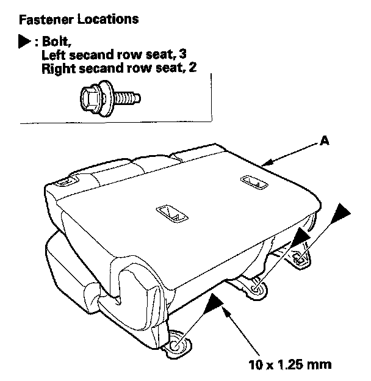
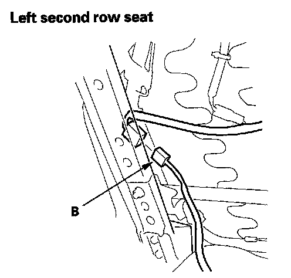
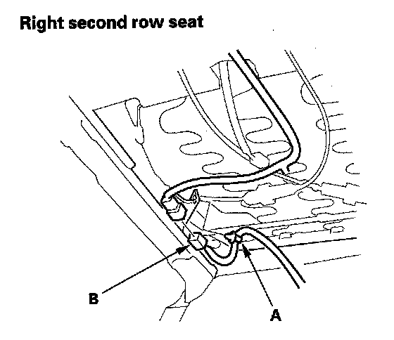
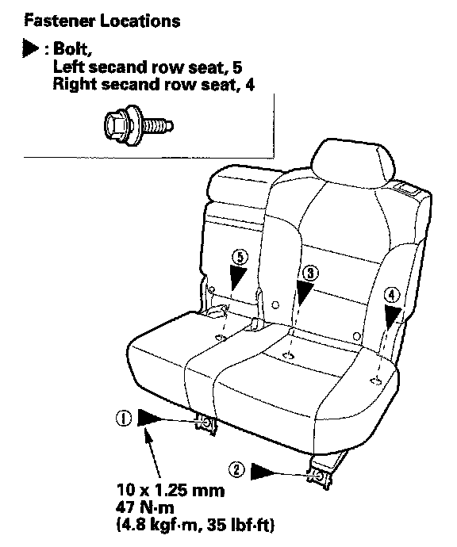

Second Row Seat
Second Row Seat Removal/InstallationSpecial Tools Required
KTC trim tool set SOJATP2014 *
* Available through the American Honda Tool and Equipment Program
NOTE:
- Put on gloves to protect your hands.
- Use the appropriate tool from the KTC trim tool set to avoid damage when removing components.
- Take care not to scratch the body or tear the seat covers.
1. Raise the seat-back.

2. Remove the front foot inner cover (A) and front foot outer cover (B) from the front of the seat tracks.
3. Fold the seat-back forward.


4. Remove the rear ISO fix bracket cover cap (A) (left second row seat), rear foot inner cover (B), and rear foot outer cover (C) from the back of the seat tracks.

5. From the front of the seat tracks, remove the bolts securing the second row seat (A).

6. From the back of the seat tracks, remove the bolts securing the second row seat (A).


7. With seat heater: Lift up the front seat, then detach the harness clip (A), and disconnect the seat-back heater connector (B).
8. With the help of an assistant, carefully remove the second row seat through the rear door opening.

9. Install the seat in the reverse order of removal, and note these items:
- Apply medium strength type liquid thread lock to the seat mounting bolts before reinstallation.
- Tighten the seat mounting bolts to the specified torque in the sequence shown. Tighten (1) and (2), then tighten (3) and (4), and on the left second row seat, also tighten (5).
- If equipped, make sure the seat heater connector is plugged in properly.
- Tighten the bolts by hand first, then tighten them to specification with a torque wrench.